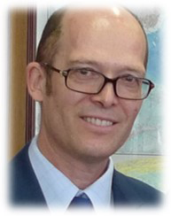
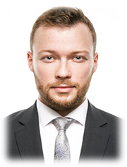
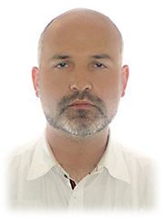

The Summer school “Arctic Law” will bring together leading experts in International Law, Law of the Sea, Environmental and Energy Law, Northern Indigenous Peoples Rights, and other fields

Alexander N. Vylegzhanin
Doctor of Law, Professor, is a Head of the Program of International Law, Moscow State Institute of International Relations (MGIMO- University). He is currently elected as a Vice-president of the Russian Association of International Law and a Vice-President of the Russian Association of the Law of the Sea. He is nominated by the Russian Federation to the list of arbitrators according to Annex VII of the UNCLOS. He is elected as a Member of the Presidium of the Committee of Experts on the Arctic and Antarctic of the Council of Federation (the Upper Chamber of the Russian Parliament). He is nominated as a Member of the Scientific Committee of the Governmental Marine Board of the Russian Federation. He is Honorable Lawyer of the Russian Federation. He is Editor-in Chief of the Moscow Journal of International Law and also a Member of the Editorial Board of the Journal “JUS GENTIUM”. He has publicized a wide array of books and papers on international issues, mainly in Russian (more than 160).
Tina Hunter
Professor Tina Hunter is the Director of the Aberdeen University Centre for Energy Law (AUCEL) and the Professor in Energy Law at the University of Aberdeen. She teaches and researches in the area of petroleum law, resources law in the Arctic and shale gas law. She has undertaken teaching, research and consultancies in numerous countries including the UK, Australia, Norway, Canada, Iceland, Greece, Finland, Russia, the USA and the Philippines. She has academic qualifications in marine sediments, geology, political science, and information science. She received her PhD from the University of Bergen, and has been a visiting scholar to a number of European, Australian and North American universities. Her expertise in regulating of petroleum activities has been sought by many governments to undertake such activities as analysing petroleum laws, drafting legislation and advising governments, industry groups and NGO's worldwide. Professor Hunter is a member of the EU’s European Science and Technology Network on Hydrocarbon Extraction, an Editor of OGEL, and Advisor to several bodies.
Jan Jakub Solski
Jan Jakub Solski is a Postdoc in UiT (Norway). In April 2019 defended a Ph.D. thesis on "Russian Coastal State Jurisdiction over Commercial Vessels Navigating the Northern Sea Route". Postdoctoral research is conducted under the following lines of investigation: 1. Development of Russia’s Arctic shipping regulations: status and trends in the Russian regulation of shipping in its Arctic maritime zones. 2. Russia and emerging users of NSR: law and practice of emerging users of the NSR in Russian Arctic waters. 3. Russian influence on international legal and political processes. Jan is teaching, supervising, and censoring at Master of Laws (LL.M.) in the Law of the Sea degree program, Faculty of Law, University of Tromsø - The Arctic University of Norway.
Tatiana Sorokina
Head of the Arctic Biomonitoring Laboratory, Associate Professor in the Northern (Arctic) Federal University named after M.V. Lomonosov (NArFU).
In 2006 graduated from the law faculty of the Pomor State University named after M. V. Lomonosov in Arkhangelsk. In 2009 graduated from the Institute of State and Law of the Russian Academy of Sciences in Moscow. In 2011 was awarded the title of candidate of law. The dissertation topic was "Mechanisms of Protection of the Right to a Favorable Environment".
Since 2011 has been working in NArfU.
She teaches the Environmental Law and the Law of the Sea. Since 2017 is a research project manager “Development of methodology for monitoring, assessment, prediction and prevention of risks associated with the high level toxic polluting substances transfer through biological pathways”. This project was supported by the Government of the Russian Federation.

Maksim Zadorin
Associate Professor of the Department of International Law and Comparative Jurisprudence at the Higher School of Economics, Management and Law, NArFU

Ivan Saveliev
Head of department of international law and comparative jurisprudence, associate professor, candidate on historical sciences. Academic supervisor of master program “Law of the Arctic”. Participant of 7 Arctic expeditions (Alaska, Spitsbergen, Russian Arctic). Have more than 70 publications on different aspects on history and law of Arctic region. Teach international law, Comparative jurisprudence, Legal systems of Arctic states, Law of the sea, Migration law of Arctic states, international environmental law and other.
Edgardo Sobenes
Edgardo Sobenes is an international lawyer with extensive experience in international litigation before the ICJ. His experience includes the representation of Sovereign States in nine proceedings before the ICJ and over 8 years as senior diplomat and legal advisor before international organizations. He holds a degree in Law and Economics from the Central-America University (UCA), an Advanced LL.M in Public international Law and International Dispute Settlement from Leiden University, and an International Master’s in Law from the University of Barcelona and ISDE. He has several legal publications and has acted as a lecturer in different Universities across Europe and Central America.
Anne Coulon
Anne Coulon is a public international lawyer, Associate Member of Temple Garden Chambers. She spent several years working at the International Court of Justice, where she served inter alia as principal legal advisor to the former President of the Court, H.E. Judge Ronny Abraham, during his three-year term. She holds a double degree in French and German Law from the Universities of Paris 1 and Cologne, a Master’s Degree in Public International Law from the University of Paris 2, and an LL.M. in International Legal Studies from NYU School of Law, which she completed as a Fulbright Scholar. Anne is a member of the New York Bar.